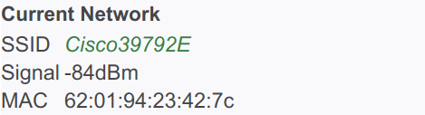

The WIFI page provides information about the WSC-LP1 WIFI settings, and allows you to change those settings.
SSID is Service Set Identifier for your network. It's basically your router's name as seen by WIFI devices trying to connect to your network.
Signal is the strength of the radio signal received by the WSC-LP1 from your router, expressed in dBm. It ranges from around -40dBm to -96dBm. The signal value is updated once per second. You can use it to evaluate the effect of moving the WSC-LP1 and/or your router when locating the system.
MAC is the Media Access Control address of the WSC-LP1. It is a permanent ID for the controller. It can be useful for identifying where the WSC-LP1 is connected on your network (i.e. the IP address.) Some routers do not report the controller name, but they usually do report the MAC address of each wireless connection. When in doubt use the MAC address.
Click the Scan Networks button to cause the controller to scan for in-range networks. If you have more than one WIFI router you might try each one to see which has the stronger signal.
If you plan to phase out a router the easiest way to manage the WSC-LP1 is use Scan Networks to switch to the new router before shutting down the old router.
Click the Reset WIFI to clear the controller's WIFI configuration. You might want to do this if you are replacing your WIFI router but don't have the new router running. When the new router is ready you can reconfigure the radio to run on the new network.